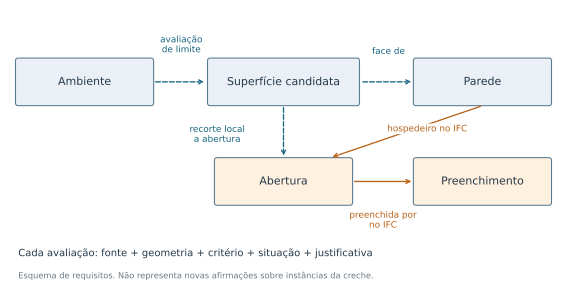

Questões de competência e modelo conceitual de referência
CIV2155 · v01 · 29/10/2026
Definir o conteúdo e as relações necessários para avaliar as limitações da transformação e do enriquecimento IFC-RDF.
Arquitetura da Creche Tipo 2, ARQ-DTV R03, com cozinha como piloto geométrico. CQ1 mantém o controle histórico dos 41 ambientes. CQ3 conserva as condições da integração com SMT; não há solução de conflitos ou novo ensaio entre disciplinas.
Especificação de requisitos e modelo-alvo; não é novo grafo de instâncias, formalização OWL implementada ou validação arquitetônica.
Documento PDF · Questões e critérios editáveis · Especificação estruturada
Modelo-alvo de informação

| Conceito | Definição | Distinção |
|---|
| Ambiente | Extensão espacial 3D do cômodo; identidade por modelo e GUID. | bot:Space como referência; não é a mesma coisa que sua malha ou sólido. |
| Elemento construtivo / parede | Objeto do modelo; a parede pode participar de interfaces com mais de um ambiente. | bot:Element como referência para elementos físicos; preservar classe IFC. |
| Abertura | Região declarada associada a um hospedeiro, identificada separadamente do preenchimento. | Conceito IFC; não presumir equivalência automática a bot:Element. |
| Preenchimento | Papel exercido pelo elemento relacionado à abertura no IFC. | Pode ter classe IfcDoor, IfcWindow, IfcWall ou outra. Papel e classe não são sinônimos. |
| Interface | Relação qualificada entre participantes, como ambiente e parede. | bot:Interface é referência de modelagem; superfície calculada não recebe automaticamente essa classe. |
| Geometria / superfície / recorte | Representação computacional ligada ao objeto ou à relação investigada. | Registrar formato, coordenadas, unidade e referencial; distinguir superfície bruta de área líquida. |
| Avaliação de relação | Registro que liga uma hipótese a suas fontes, critérios, métricas e situação. | Mantém sinais locais e globais separados; não é um novo objeto físico da edificação. |
CQ1 · Quais ambientes existem e a quais pavimentos pertencem?
| Origem | CQ1 preservada |
|---|
| Relação pretendida | Identificação do ambiente e pertencimento ao pavimento no mesmo modelo. |
|---|
| Resposta esperada | GUID e nome do ambiente; GUID do pavimento; relação IFC e aresta RDF correspondentes; versão da fonte. |
|---|
| Requisitos | R01; R02; R09 |
|---|
| Informação necessária | IfcSpace, GlobalId, LongName e relação espacial com IfcBuildingStorey. |
|---|
| Aceitação | Confrontar os identificadores e a relação declarada no IFC com o RDF, no mesmo recorte e versão. |
|---|
| Rejeição delimitada | Vínculo não corresponde à relação IFC ou identifica outro ambiente/pavimento. |
|---|
| Inconclusão | Vínculo ausente ou ambiguamente documentado; distinguir ausência na entrada de perda na conversão. |
|---|
| Evidência atual | Controle histórico dos 41 ambientes; não reexecutado nesta consolidação. |
|---|
CQ2.1 · Quais paredes delimitam o ambiente e qual superfície representa cada interface?
| Origem | Desdobramento de CQ2 |
|---|
| Relação pretendida | Delimitação/adjacência do ambiente por uma parcela identificada da parede. |
|---|
| Resposta esperada | GUIDs do ambiente e da parede; superfície candidata; geometria, área, referencial, fonte e estado da avaliação. |
|---|
| Requisitos | R03; R06; R09 |
|---|
| Informação necessária | Geometrias comparáveis, associação de cada superfície ao objeto e evidência arquitetônica de referência. |
|---|
| Aceitação | Para aceitar a relação arquitetônica, identificar a interface pertinente, conferir o critério geométrico e confrontar planta/corte ou anotação especializada independente. Explicitar como tratar sobreposição e granulação. |
|---|
| Rejeição delimitada | A referência independente contradiz a delimitação; registrar qual evidência contradiz a relação. Falha geométrica isolada não basta para rejeição arquitetônica. |
|---|
| Inconclusão | Somente proximidade, contato sem interpretação, sobreposição não esclarecida ou ausência de referência independente. |
|---|
| Evidência atual | 14 superfícies brutas candidatas no piloto da cozinha; arquitetura não validada. |
|---|
CQ2.2 · Quais aberturas se associam às interfaces do ambiente e quais elementos as preenchem no IFC?
| Origem | Desdobramento de CQ2; amplia explicitamente portas para preenchimentos |
|---|
| Relação pretendida | Vínculo local ambiente-interface-abertura e vínculo declarado abertura-preenchimento. |
|---|
| Resposta esperada | GUIDs de ambiente, parede, abertura e preenchimento; GUIDs de IfcRelVoidsElement/IfcRelFillsElement; classe; recorte e evidências. |
|---|
| Requisitos | R03; R04; R09 |
|---|
| Informação necessária | Cadeias declaradas e recorte local da abertura na superfície pertinente ao ambiente. |
|---|
| Aceitação | Aceitar a cadeia declarada quando seus GUIDs correspondem ao IFC. Aceitar o vínculo arquitetônico ao cômodo somente com associação local e conferência independente; registrar separadamente os dois alcances. |
|---|
| Rejeição delimitada | Uma cadeia divergente pode ser rejeitada como reprodução do IFC. Separação geométrica exclui contato no critério, mas não define automaticamente função ou outro cômodo atendido. |
|---|
| Inconclusão | Cadeia correta sem interface local confirmada; recorte coincidente sem validação arquitetônica; preenchimento cuja função permanece desconhecida. |
|---|
| Evidência atual | 24 cadeias conferidas; 10 aberturas com 11 recortes coincidentes. Os preenchimentos incluem IfcWall. |
|---|
CQ2.3 · Quais elementos estão total ou parcialmente localizados no volume do ambiente, sem exigir que o delimitem?
| Origem | Extensão explícita das perguntas arquitetônicas |
|---|
| Relação pretendida | Localização geométrica por inclusão ou interseção, distinta de delimitação e de função. |
|---|
| Resposta esperada | GUID do elemento; classe; relação candidata; evidência geométrica e unidade; indicação de valor indisponível e motivo. |
|---|
| Requisitos | R10 (novo); R06 e R09 (apoio) |
|---|
| Informação necessária | Representação adequada ao teste escolhido, geometria do espaço e do elemento, unidades e referencial compatíveis. |
|---|
| Aceitação | Distinguir inclusão total de interseção parcial, especificar o teste e seus limites, validar a representação e confrontar referência independente quando a conclusão for arquitetônica. |
|---|
| Rejeição delimitada | Rejeitar uma hipótese de contato/inclusão somente no alcance do teste documentado. Não usar ausência de resultado de superfície como prova de ausência de localização. |
|---|
| Inconclusão | Volume indisponível, múltiplos componentes não cobertos, referencial incerto ou representação inadequada ao teste. |
|---|
| Evidência atual | Fração volumétrica dos 24 preenchimentos indisponível no procedimento conservador. Nenhuma inclusão arquitetônica confirmada. |
|---|
CQ3 · Quais ambientes arquitetônicos são atravessados por um elemento estrutural do modelo SMT?
| Origem | CQ3 preservada como questão de integração |
|---|
| Relação pretendida | Relação espacial entre disciplinas, com identidade e referenciais rastreáveis. |
|---|
| Resposta esperada | IDs compostos por modelo+GUID; par elemento-ambiente; geometria e referenciais; critério; evidência e limitação. |
|---|
| Requisitos | R05; R06; R07; R08; R09 |
|---|
| Informação necessária | Identificadores, geometrias, unidades e transformação entre referenciais, além da definição operacional de atravessamento. |
|---|
| Aceitação | Exige primeiro verificar compatibilidade espacial e definir se atravessar significa apenas intersectar ou também entrar e sair do volume. O vocabulário e o teste devem refletir a escolha. |
|---|
| Rejeição delimitada | Não atribuir ausência de atravessamento quando a comparação entre referenciais ou geometrias é inconclusiva. |
|---|
| Inconclusão | Alinhamento não demonstrado, geometria insuficiente ou significado de atravessamento não fixado. |
|---|
| Evidência atual | Requisitos para discussão das limitações; nenhum novo ensaio com SMT nesta consolidação. |
|---|
Regras de modelagem
| ID | Assunto | Regra |
|---|
| MC01 | Identidade | Usar modelo/versão + GUID. Preservar GUIDs de relações; nomes repetidos não identificam objetos. |
| MC02 | Granulação | Registrar a parcela pertinente da parede. Não inferir que todas as aberturas de uma parede compartilhada pertencem ao mesmo cômodo. |
| MC03 | Níveis de evidência | Distinguir dado declarado IFC, medição geométrica e decisão arquitetônica independente. Esses estados não são uma escala numérica de confiança. |
| MC04 | Compatibilidade BOT | adjacentElement e intersectingElement são disjuntas na BOT consultada. Não afirmar ambas para o mesmo par a partir de sinais geométricos locais/globais; manter as avaliações separadas até qualificar o mapeamento. |
| MC05 | Representação | Geometria válida como BRep pode não formar um único sólido fechado. Operações indisponíveis ficam sem valor e com motivo; não recebem zero. |
| MC06 | Ausência | Resultado vazio de consulta não prova ausência arquitetônica. Distinguir dado ausente, relação não representada, falha de processamento e hipótese contrariada. |
| MC07 | Função | Contato e interseção não provam acesso, conexão funcional ou ambiente atendido. A função exige evidência própria. |
| MC08 | Tolerâncias | Os limiares numéricos do piloto são parâmetros experimentais, não tolerâncias normativas nem critérios universais de aceitação. |
| MC09 | Consistência espacial | Registrar referencial do projeto, unidades e transformações. Coordenadas XYZ disponíveis não demonstram alinhamento entre arquitetura e SMT. |
Campos mínimos
| Objeto | Campos |
|---|
| Objeto IFC | Modelo e revisão; SHA-256; GlobalId; classe; nome; relação IFC e seus participantes. |
| Geometria | Representação e versão; coordenadas XYZ; unidade; referencial e transformações; validade/topologia; origem no objeto. |
| Avaliação | Pergunta e requisito; relação candidata; participantes e parcela; método/versão; parâmetros; área/distância/volume com unidade; valor indisponível e motivo. |
| Decisão arquitetônica | Fonte independente; responsável/data; critério aplicado; caso aceito, contradito ou inconclusivo e justificativa; alcance da cobertura. |
Situações de resposta
| Situação | Significado |
|---|
| Declarado no IFC | A relação está registrada no modelo. Confirma sua declaração, não sua correção no edifício. |
| Evidência geométrica candidata | O teste produziu resultado nas condições registradas. Não equivale a pertencimento funcional. |
| Confirmado no critério arquitetônico | Há confronto com referência independente identificada e critério explícito; alcance limitado aos casos conferidos. |
| Inconclusivo | A informação, representação ou referência é insuficiente; o motivo permanece explícito. |
| Contradito no critério | A evidência de referência ou o teste delimitado contraria a hipótese, com justificativa registrada. |
Relação com o programa
| Tema | Questões | Contribuição | Localizador |
|---|
| Requisitos BIM do cliente | CQ1; CQ2.1-CQ2.3 | Explicitar a pergunta, o conteúdo necessário e a resposta esperada. | Programa, p. 2: reunião com equipe - requisitos BIM do cliente. |
| Comunicação x nomenclatura | CQ1; CQ2.2 | Distinguir nome, GUID, classe e papel do preenchimento. | Programa, p. 2, aula de Comunicação x Nomenclatura. |
| Coordenação BIM | CQ2.1; CQ2.2; CQ3 | Rastrear interfaces e questões pendentes, com escala local/global identificada. | Programa, p. 2: Quem é o Coordenador BIM? |
| Interoperabilidade - OpenBIM | Todas | Examinar preservação de conceitos, relações, unidades e referenciais entre representações. | Programa, p. 2, aula de Interoperabilidade - OpenBIM. |
| Integração entre modelos BIM e análise estrutural | CQ3 | Identificar pré-condições e limitações para a comparação entre disciplinas. | Programa, p. 2, aula de Integração entre Modelos BIM e Análise Estrutural. |
| Panorama ISO19650 | R09 e metadados das avaliações | Relacionar requisitos e rastreabilidade da informação ao tema da aula, sem alegar conformidade com a norma. | Programa, p. 2: Panorama ISO19650. |
Controles conceituais
| ID | Situação | Comportamento esperado |
|---|
| CC01 | Parede compartilhada com abertura separada do ambiente | A cadeia via parede não basta para associação ao cômodo; preservar a separação observada no critério. |
| CC02 | C09-C12: quatro janelas da parede W06 | O mesmo volume global não é contado como quatro conflitos locais; não confirmar a associação arquitetônica. |
| CC03 | Superfície coincidente e volume comum positivo no mesmo par | Preservar os dois sinais como avaliações contextualizadas; não afirmar simultaneamente propriedades BOT disjuntas. |
| CC04 | Preenchimento IfcWall | Preservar classe e papel; não reclassificar como porta/janela nem marcar erro somente pelo tipo. |
| CC05 | Volume do preenchimento indisponível | Resultado inconclusivo com motivo; não preencher zero nem concluir que está fora do ambiente. |
| CC06 | CQ3 sem alinhamento entre referenciais demonstrado | Manter a conclusão de atravessamento indeterminada; discutir pré-condições e limitações. |
Fontes e localizadores
F01 · Noy e McGuinness (2001). Ontology Development 101: A Guide to Creating Your First Ontology.
Guia técnico-acadêmico de Stanford; não é artigo de periódico. Seção 3, Step 1 e Competency questions, p. 5; Step 4 e Step 5 para conceitos/propriedades.
Finalidade, escopo, perguntas de competência e revisão iterativa. Não prescreve este conjunto de perguntas. Acesso à fonte
F02 · Linked Building Data Community Group. Building Topology Ontology (BOT).
Especificação pública do grupo de comunidade; a página se identifica como Public Draft, não como Recomendação W3C. Elementos e zonas: containsElement, adjacentElement, intersectingElement; seção Interfaces.
Distinção dos termos e incompatibilidade entre adjacentElement/intersectingElement para o mesmo par. Não estabelece o algoritmo geométrico de aceitação. Acesso à fonte
F03 · W3C. OWL 2 Web Ontology Language Primer. Second Edition, 2012.
Primer informativo publicado como Recomendação W3C. Seção 2: hipótese de mundo aberto; seção 4: classes e propriedades.
Separação entre descrição e dados; ausência de afirmação não implica falsidade. Acesso à fonte
F04 · Programa da disciplina CIV2155. Segundo semestre de 2026.
Documento da disciplina fornecido pelo pesquisador. Arquivo local CIV2155_Programa_da_Disciplina.pdf, p. 2.
Temas da disciplina; a correlação com as questões é interpretação analítica deste estudo.
D09 · Notebook 1 v04 e Resultado_Piloto.json.
Evidência empírica do estudo. Registro do piloto da cozinha e seu RDF.
Superfícies candidatas e recortes com coordenadas; alcance da avaliação preservado. Acesso à fonte
D10 · Notebook 6 e Conferencia_Geometrica_Cozinha.json.
Conferência interna do mesmo IFC. 24 casos e 34 paredes; valores indisponíveis e distinção global/local.
Casos que motivam critérios; não padrão-ouro arquitetônico independente. Acesso à fonte
Retificação de referências
As três primeiras linhas do quadro anterior de critérios devem se vincular a R03, R04 e R04. As evidências e medições permanecem inalteradas. A matriz v02 é preservada.
CSV retificado · Errata
R10 formaliza a questão de localização acrescentada nesta consolidação, sem renumerar os nove requisitos anteriores.